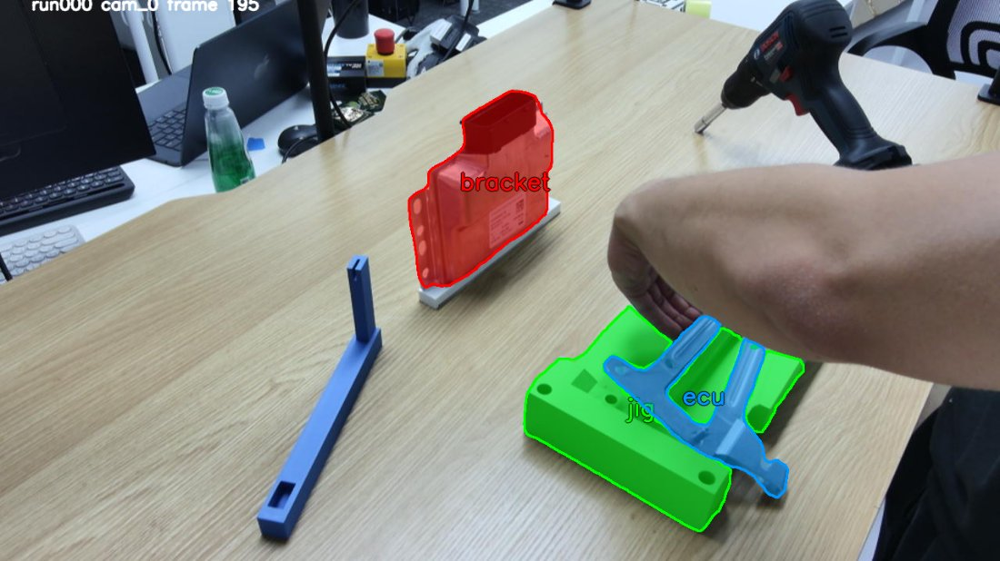

01The data
4-camera BMW rig, per-object masks, VGGT-Omega object points in the BA world frame. Object label order (user decree): jig · ecu · bracket · drill — confirmed against the masks below.

02Pipeline
Raw rosbag → trainable HDF5. Every stage runs per-run over the 60 runs.
| Stage | Method | Output |
|---|---|---|
| Hand pose (4-view) | MANO-pipeline: YOLO+WiLoR+HaMeR → triangulate → MANO fit | joints_m (T,42,3) |
| Export | bag depth decode + mask merge + BA calib | data/<run>/{depth,masks,calibration.yaml} |
| Contact (single-view HaWoR) | extract_tactile (cam_0) → per-vertex 778 → label_fingertip | contact_labels/<run>_contact.npz (2,T,5) |
| Object point | VGGT-Omega MV → metric scale → 10 mm grad filter → BA lift → Umeyama → FPS 2048 | object_points_3d (T,4,2048,3) |
| Merge + post | merge shards → subtask (Q=0) / initdest ramps | bmw_ft_0821_full*.h5 |
Frame-alignment fix that matters: the hoi hand pose is already in the BA world (board) frame, so extraction runs with SJ_IDENTITY=1 — no cam0→world transform (the old rlwrld batch was cam0-framed and needed one). Verified: joints finite=1.0, range ≈ [-0.5, 0.9] m; all 4 object slots nonzero, per-object centroids match the mask layout.
03Trained policies
Two rounds. All PT-init from VITRA 6-pt, 100k steps, num_queries=16, verified _global_step=100000.
Exp1 — initdest / subtask matrix (act_subsample=2)
| Policy | initdest | subtask | data |
|---|---|---|---|
| dpp_bmw_0821_2x | — | — | full |
| dpp_bmw_0821_2x_initdest | ✓ | — | _initdest |
| dpp_bmw_0821_2x_subtask_initdest | ✓ | ✓ | _subtask_initdest |
Exp2 — subsample × point-augmentation (subtask, no initdest)
| Policy | subsample | point aug | data |
|---|---|---|---|
| dpp_bmw_0821_subtask_2x | 2x | — (base) | _subtask |
| dpp_bmw_0821_subtask_1x | 1x | — | _subtask |
| dpp_bmw_0821_subtask_2x_aug1cm | 2x | 1 cm | _subtask |
| dpp_bmw_0821_subtask_2x_aug5cm | 2x | 5 cm | _subtask |
Comparison axes: (a) 1x vs 2x action subsample, (b) point-augmentation strength (none / 1 cm / 5 cm). Behavioural (success-rate) numbers pending eval.
04Point-shift augmentation
DPP feeds object & hand points in absolute coordinates. Each sample gets one spherical shift δ (uniform in a ball of radius r, isotropic) added to every world-frame quantity — past hand 6-pt, object points, action targets, ego translation — so relative geometry is preserved and only the absolute frame moves.
Consistency check: per-sample median distance between hand centroid and object centroid stays flat as the augmentation radius grows to 50 cm — proof the shift is applied identically to hands and objects (an inconsistent shift would blow this up).
median |hand_center − obj_center| over 120 samples · dataloader.bc_dataset.point_shift_radius (m) · uniform-in-ball, isotropic.
05Issues ruled through
- →Object label order.Masks named by object; the extractor's
object_nameswas hard-coded to the old order. Fixed to jig,ecu,bracket,drill and confirmed the stored points already followed the mask label ids (metadata-only correction, no re-extraction). - →VGGT CUDA-OOM under high parallelism.%20 fan-out landed jobs on small/contended GPUs → 22 OOMs, and the sbatch lacked
set -eso they exited 0 (false success). Caught by counting shards, not trusting sacct; re-ran on big GPUs withset -e. - ✓Frame convention verified.hoi hand pose already in BA world →
SJ_IDENTITY=1; joints and object centroids land in a consistent workspace. - ✓Augmentation consistency verified.Relative hand–object geometry preserved to ±1 cm at a 50 cm shift.
06Timeline
-
2026-08-22
Data pipeline (60 runs)
Hand pose 60/60, export 60/60, contact 60/60, object points 60/60 shards → merge + subtask/initdest post-processing. Object order set to jig,ecu,bracket,drill after verifying mask identities.
-
2026-08-23
Exp1 — 3 base policies
2x / 2x+initdest / 2x+subtask+initdest all reach 100k, torch-load verified. One straggler (plain 2x) was moved off a contended node and resumed cleanly from 30k.
-
2026-08-23
Exp2 — subsample × point-aug
Implemented point-shift augmentation in the dataloader, verified consistent, trained 2x / 1x / 2x+aug1cm / 2x+aug5cm (all subtask, no initdest) to 100k. aug5cm hit one startup OOM (GPU contention, not the aug) and finished on retry.
07Next
- ·Eval / rollout comparison.Success-rate across the 7 checkpoints to read (a) 1x vs 2x subsample, (b) point-aug robustness gain (1 cm / 5 cm), (c) initdest/subtask contribution. Harness: seunghoon bmw_task (read-only).
08Artifacts & repro
- ·Checkpointsdex-point-policy/exp_local/2026.08.2{2,3}/dpp_bmw_0821_*/deterministic/*/snapshot/100000.pt
- ·Training dataALIN_ROSBAG/bmw_0821/bmw_ft_0821_full{,_subtask,_initdest,_subtask_initdest}.h5
- ·Launchersmano_run101_work/run_{export,contact,objpoint}_bmw0821.sbatch · dex-point-policy/scripts/run_train_bmw.sbatch
- ·Full reportclaude-code-rc/dpp-bmw/REPORT_bmw0821.md